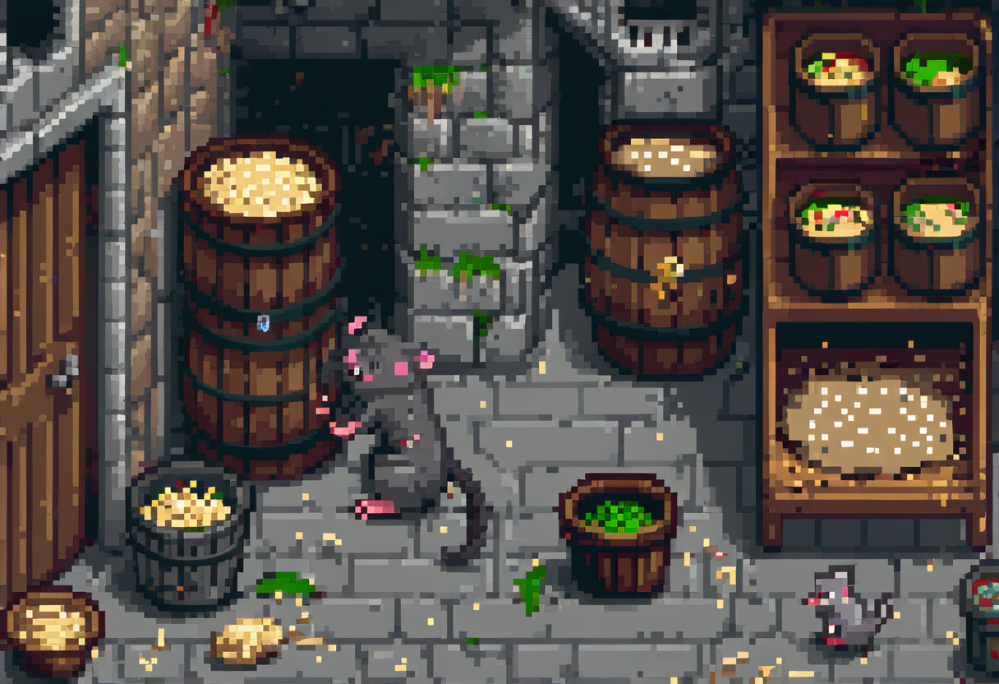

2 Software Security & Malware

Most attacks don’t break the maths. They exploit a mistake someone made writing the software, or a person willing to run something they shouldn’t.
There is a comforting myth that attackers are code-breaking geniuses defeating unbreakable encryption. Reality is more mundane and more useful to understand. The overwhelming majority of attacks walk in through a flaw someone left in a program, or a user who ran a file they were tricked into trusting. This chapter is about those two doors: the bugs in software, and the malicious software that exploits them (or exploits us). Understand where the doors are, and you can start closing them.
2.1 What this chapter covers
By the end you should be able to:
- Distinguish design flaws from implementation flaws, and explain attack surface.
- Explain what CVE and CWE are, and how vulnerability disclosure works (responsible disclosure, zero-day).
- Classify the main families of malware: viruses, worms, spyware, adware, trojans, RATs, ransomware, rootkits, and botnets.
- Explain how a trojan and a botnet actually work, and how we detect and prevent them.
- Trace how a real breach chains several of these together.
2.2 Where flaws come from
Software fails in two ways, and the distinction matters because they are fixed differently.
A design flaw is a mistake in the plan. The software does what it was designed to do, and the design itself is insecure. A system that emails you your own password in plain text has no bug. It works as intended, and the intention is the problem. Design flaws are expensive because fixing them means changing the plan, often after everything has been built on top of it.
An implementation flaw is a mistake in the building. The design was sound, but somewhere in the code a programmer made an error: mishandled a length, trusted an input they shouldn’t have, forgot a check. Most of the vulnerabilities you’ll hear about are implementation flaws, and they are the reason software needs constant patching.
Every flaw is only a threat if an attacker can reach it. This brings us to attack surface: the sum of all the points where an attacker could try to get in. Every open port, every input field, every feature, every piece of installed software adds to it. A defender’s instinct, seen already in the last chapter, is to reduce attack surface: turn off what you don’t use, close what you don’t need, and you shrink the number of doors an attacker can try. Attack surface is not fixed. It grows every time you add a feature, install software, or connect a new system, which is why security is never “done.”
2.3 Naming the weaknesses: CVE and CWE
When there are millions of flaws across the world’s software, you need a way to talk about them precisely. Two catalogues do this. A CVE (Common Vulnerabilities and Exposures) is a unique identifier for one specific vulnerability in one specific product: a particular flaw in a particular version, with a reference number everyone can point to. A CWE (Common Weakness Enumeration) is one level up: a category of type of flaw (“improper input validation,” “use after free”) that recurs across many products. CVEs are the individual cases; CWEs are the patterns behind them.
2.3.1 Disclosure and the zero-day
When a researcher finds a flaw, what should they do with it? The professional answer is responsible (or coordinated) disclosure: tell the vendor privately, give them reasonable time to build and ship a fix, and only then make the details public. This protects users during the window when a fix doesn’t yet exist. The alternative hands attackers a weapon: publishing a working exploit before a patch is available.
A zero-day is a vulnerability that is being exploited before the vendor knows about it (or before a patch exists). The defenders have had “zero days” to prepare. Zero-days are dangerous because the usual defence, patching, isn’t available yet. They are also a reminder of why assume breach matters: some flaws will be exploited before anyone can fix them, so a defence that relies only on “keep everything patched” will, on some day, fail.
2.4 Malware: a field guide
Malware (malicious software) is the general term for any program written to do harm. The families are worth knowing because they spread and survive differently, and each difference is a place to defend.
2.4.1 Viruses and worms
A virus attaches itself to a legitimate file or program and spreads when that host is run and shared. It needs a carrier and, usually, a human to move it. A macro virus hides in the scripting built into documents (a spreadsheet or word-processor file), which is why “enable macros?” is a question worth treating with suspicion.
A worm is the more dangerous cousin: it spreads on its own, across the network, without needing a host file or a human to carry it. The 1988 Morris Worm, one of the first, showed the pattern that still holds: self-propagating code can move faster than any human response. For a defender, a worm’s fuel is connectivity and unpatched systems, so segmentation and patching are what starve it.
2.4.2 Spyware, adware, and the willing click
Not all malware exploits a software flaw. Spyware collects information (keystrokes, browsing, credentials) and reports it back. Adware forces unwanted advertising and often tracks you to do it. A great deal of malware needs no vulnerability at all: it needs the user to agree, to click “install,” to run the attachment, to grant the permission. This is the theme that returns in the human-factors chapter: the most patched system in the world can still be undone by one willing click.
2.5 Trojans, RATs, and botnets
A trojan horse is malware disguised as something desirable: a game, a cracked application, a useful tool. The user runs it willingly, and while it may even do what it claims, it also does something else. A Remote Access Trojan (RAT) is a nasty variant: it hands the attacker remote control of the machine (files, webcam, keystrokes, the lot) as though they were sitting at it.
Scale this up and you get a botnet: a network of many compromised machines (“bots”) under one attacker’s control, taking orders from a command-and-control server. A botnet’s owner can rent it out to send spam, mine cryptocurrency, or overwhelm a target with a distributed denial-of-service (DDoS) attack. The infamous Zeus family, for example, turned huge numbers of ordinary PCs into a credential-stealing network. The defender’s insight is that a botnet’s value is aggregate. No single infected machine matters much, which is why individual users underestimate the cost of being compromised.
The modern headline act deserves its own mention: ransomware encrypts a victim’s files and demands payment for the key. It has become the dominant malware threat to organisations because it monetises a breach directly. It is where the recovery and continuity planning of a later chapter earns its keep. The defence that saves you is a tested backup, not a ransom payment.
2.6 Rootkits: hiding in the floor
A rootkit is malware that subverts a low level of the system (the operating system, or below it) so that it can hide everything above. By compromising the layer the rest of the system trusts to report the truth, a rootkit can make its own files, processes, and network connections invisible to the tools you’d normally use to find them. This is why compromised machines are often rebuilt from scratch rather than “cleaned”: once you can’t trust the floor you’re standing on, you can’t trust anything it tells you.
2.7 Defending against malware
No single control stops all of this. That is why the book argues for layered defence. Antivirus that matches known signatures catches yesterday’s malware but not a brand-new variant, so it must be one layer among many. Patching closes the flaws worms and exploits need. Least privilege stops a compromised program reaching everything. Controls limit what software is allowed to run. User education targets the willing click. Monitoring catches the intrusion that gets through anyway. “We have antivirus” is not a security strategy. It is one thin layer, and a defender who relies on it alone has assumed the breach won’t happen.
2.8 How it comes together: a real breach
Real attacks rarely use one flaw. They chain several. The 2013 Target breach is a classic worked example. Attackers first stole network credentials from a third-party contractor (a heating-and-cooling vendor with access to Target’s systems). They used that foothold to reach the retail network and installed point-of-sale malware (the “BlackPOS” family) that scraped card data from checkout terminals. They exfiltrated tens of millions of card records while warning signs went unheeded. Read it as a defender and every stage is a control that could have caught it: tighter vendor access, network segmentation, restricted software execution, and someone acting on the alerts. No single fix would have stopped it. A chain of small failures let it through, and a chain of ordinary controls would have broken it.
Incident Zero, a free, print-and-play security game, has a Hardening module where you spend a limited budget on layered defences and then a pentester attacks. It’s the fastest way to feel why one control is never enough, and why “we have antivirus” is not a security strategy. → incidentzero.retroverse.studio
2.9 Where this connects
The introduction laid out the phases of an attack, and this chapter fills in the “gaining access” phase. Stolen credentials, as in the Target breach, are the entry point the authentication chapter is about. Botnets and the criminal economy behind malware return in cybercrime, botnets and forensics.
2.10 Questions to consider
- What’s the difference between a design flaw and an implementation flaw? Give an everyday (non-software) analogy for each.
- A worm and a trojan both spread, but they rely on different things. What does each one need to succeed, and which is easier to defend against?
- Skim the Target breach. Write your one-sentence guess at the single change that would most likely have stopped it.